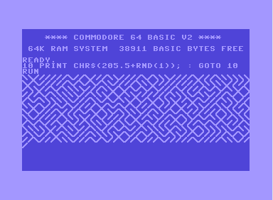
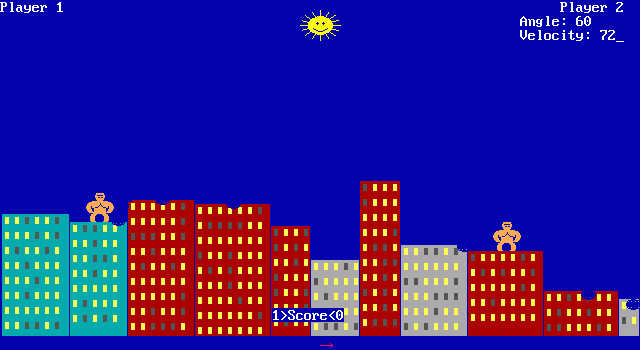
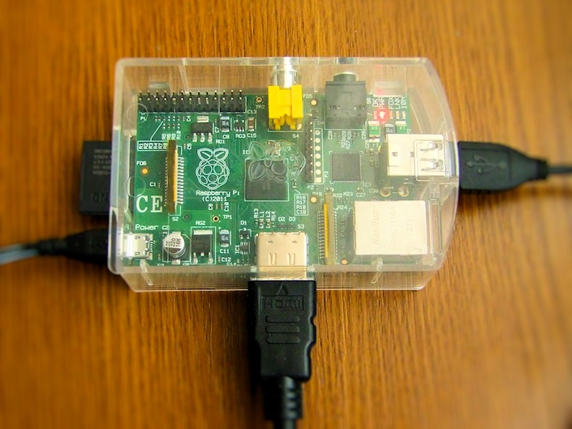
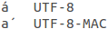

https://www.youtube.com/watch?v=cpWHJDLsqTU
A többit majd holnap.
Poszt-apokaliptikus cyberpunk point-and-click kalandjáték csodálatos zenével és grafikával. Ezzel leptem meg magam karácsonyra.
What happened to the humans?
Set in a post-apocalyptic world strewn with cast-off machines, Primordia tells the story of Horatio Nullbuilt, a stoic robot who values his solitude and independence. Horatio spends his days studying the Book of Man, sparring with his droid companion Crispin, and tinkering with the airship they call home — a peaceful existence that becomes threatened when a rogue robot steals the energy source that the pair needs to survive.
When Horatio and Crispin’s search for energy brings them to the dazzling city of Metropol, the simple quest to recover their stolen power core leads to unexpected discoveries about Horatio’s origins and a new understanding of the legendary humans who walked the earth before him.
Pont azután olvastam Plastik Józsi angelday Commodore 64 BASIC „grafikás” posztját, hogy nekiálltam, és meghegesztettem a Gorillas-t, hogy fusson Windowson és Linuxon. Tökéletes időzítés.
Ezzel az egy sorból kiindulva készült egy könyv, ami a számítógépek és a procedurális BASIC grafikák világát, benne a Commodore 64-et mutatja be – 10print.org. […]
Plastik média – 10 PRINT CHR$(205.5+RND(1)); : GOTO 10
Nagyon jó könyv, gyönyörű dolgok vannak benne.

Gondoltam egyet, és átírtam a 10 PRINT CHR$(205.5+RND(1)); : GOTO 10 sort Batch-be, PowerShellbe és Bash-be is. Sajnos az első három változat nem produkál olyan szép „képet”, mint C64-en, viszont ha kicseréljük a „/” (slash) és „\” (backslash) karaktereket „-” és „|” (vertical bar) karakterekre, akkor egész szép labirintusokat kapunk. Linux-on Unicode terminált használva szinte tökéletes az output.
Batch
|
1
2 3 4 5 6 7 8 9 |
:LOOP
@ECHO OFF SET /A R=%RANDOM% %%2 IF %R%%2==0 ( ECHO|SET /P=/ ) ELSE ( ECHO|SET /P=\ ) GOTO LOOP |
PowerShell
|
1
|
While($true) {Write-Host -NoNewline $(if ((Get-Random -Minimum 0 -Maximum 2) -eq 0){"/"} else {"\"})}
|
Bash (Mac)
|
1
|
while true ; do if [ $((RANDOM % 2)) -eq 0 ] ; then printf "/" ; else printf "\" ; fi done
|
Bash (Linux)
|
1
|
while true ; do printf "\u257$(($RANDOM % 2 + 1))"; done
|
Hála a fent említett könyvnek, ismét felfedeztem a Processinget. Remélem sikerül valami érdekeset szépet alkotnom vele.

Image source: File:Gorillas screenshot.png – Wikipedia
I hope there are still some of you out there who remember the game Gorillas written in Basic. I have friends who still play this game from time to time.
These guys use Linux as their main operating system, so getting Gorillas to work needed the following workaround. First you had to get QBasic (from Microsoft or another source), then install DOSBox under Linux, start QBasic in DOSBox, load the source of Gorillas, and start the game. Each time you wanted to play you had to go through these steps, plus you had to adjust the game speed in DOSBox for your computer. I admit this isn’t difficult, but it is pokey.
So the other day I thought about rewriting this game in Basic and make it work under Windows and Linux. Finding the original(?) source wasn’t hard. The next step was to find a Basic compiler. I knew FreeBASIC, and after looking into it a little I’ve found out I can use the original graphics library of QBasic using FreeBASIC. The only problem was that I couldn’t set up FreeBASIC under 64 bit Linux, and there was the issue that FreeBASIC is a 32 bit only compiler too. I diched FreeBASIC and started to search for another Basic compiler, and luckily I’ve found QB64.
“Over 45 years of compatibility…” said the QB64 website. This aroused my interest, I thought that I might not need to rewrite the game at all but I may be able to compile the original source with QB64. To cut a long story short I had to touch only five lines of code in the original source to get the game work under Windows and Linux. Here is the receipt.
QB64 doesn’t like the inline definition on line 211, so comment it out.
|
211
|
'DEF FnRan (x) = INT(RND(1) * x) + 1
|
Add a new function declaration to the code (around line 90 in the original source).
|
1
|
DECLARE FUNCTION FnRan (x)
|
Add the following function definition to the end of the file.
|
1
2 3 4 5 |
FUNCTION FnRan (x)
FnRan = INT(RND(1) * x) + 1 END FUNCTION |
Adjust the CONST SPEEDCONST constant’s value from 500 to 100,000,000 (line 123 in the original source). Note that you may need to use a different value, depending your computer.
|
123
|
CONST SPEEDCONST = 100000000
|
Compile.
That’s it. After these modifications the code will compile without any errors. I tried it on Windows and Linux. (I don’t have a Mac but I’m pretty sure this will work under OS X too.) See the proof below.
Edit #1
I’m posting a patch which contains all described modifications. To patch the original source first unpack the linked tar.gz file then enter the following command in your terminal.
|
1
|
patch gorilla.bas -o gorilla-patched.bas < gorilla.bas.patch
|
Note that you will need the diff and patch programs for this operation (available through Cygwin under Windows).
Időpont: 2012. december 8.
Helyszín: Budapest, Óbudai Egyetem, Bécsi út 96/b
A részvétel a látogatók számára ingyenes, de regisztrációhoz kötött.Az FSF.hu Alapítvány 2012-ben újra megrendezi a Szabad Szoftver Konferenciát és Kiállítást Budapesten.
A rendezvény Budapesten, az Óbudai Egyetem Bécsi úti épületében (térkép és egyéb infó) kerül megrendezésre, 2012. december 8-án. A konferencia reggel fél tíztől délután ötig tart. Három szekcióban párhuzamosan zajlanak majd a szakmai előadások, ezekkel párhuzamosan az aulában szabad szoftverekkel és szabad kultúrával kapcsolatos kiállítás lesz. Reményeink szerint minden látogató találhat majd őt érdeklő előadásokat vagy más érdekes elfoglaltságot.
A helyszín környékén ingyenesen lehet parkolni, szombaton nem kell túl sok autóra számítani, így az autóval érkező hallgatók kényelmesen meg tudnak majd állni.
A konferencia kiemelt előadói
Kadlecsik József, a Linux kernel csomagszűrő alrendszerének, a netfilter-nek egyik vezető fejlesztője, Tímár András, LibreOffice fejlesztő, a LibreOffice Engineering Steering Comittee tagja, valamint Czakó Krisztián (Slapic), a hazai Linux közösség egyik ős-alapítója, az előző évi konferencia látogatók által megválasztott legjobb előadója. Ők választják majd ki a jelentkező előadók előadásai közül azokat, amelyek bekerülnek a három szekció programjába.
A konferenciára Magyarország legjobb előadóit, kiállítóként pedig számos szabad szoftverekkel foglalkozó civil, szakmai szervezetet valamint céget hívunk. A részvétel látogatók számára ingyenes, de regisztrációhoz kötött. Az előadások anyagából konferenciakiadvány készül majd.
Amennyiben szívesen látogatnál el, adnál elő vagy állítanál ki a konferencián, akkor kérjük regisztráld magad a bal oldalon található regisztrációs menüpontok valamelyikénél!
A potenciális kiállítók és támogatók az egyszerűség kedvéért küldhetnek azonnal levelet a konf2012@fsf.hu címre, és megkezdjük velük az egyeztetést.
Üdvözlettel:
Konferenciaszervező csapat, FSF.hu Alapítvány
Szabad Szoftver Konferencia és Kiállítás 2012, Budapest
Csak, hogy magamat is fényezzem, jelentkeztem segítőnek.
A legutóbbi kernelfrissítés után vettem észre, hogy akárhányszor újraindítom a Raspberry Pi-t mindig ki kell húznom és újra be kell dugnom a billentyűzet USB vevőjét, hogy működjön.
|
1
2 |
$ uname -a
Linux raspberrypi 3.2.27+ #160 PREEMPT Mon Sep 17 23:18:42 BST 2012 armv6l GNU/Linux |
Mondjuk ez egészen addig nem is zavart, amíg csak SSH-n értem el a RasPi-t, de most, hogy néha odaülök elé és LHX-et játszok rajta ez így elég gáz.
Íme egy workaround. A következő néhány sort az /etc/rc.local fájlban kell elhelyezni közvetlenül az exit 0 sor elé.
|
1
2 3 |
# Reload 'hid-logitech-dj' kernel module to get the Logitech K400 Keyboard work properly after startup
rmmod hid-logitech-dj modprobe hid-logitech-dj |
A megoldásra a Raspberry Pi fórumban bukkantam rá.
Alant látható a Raspberry Pi-on futtatott OpenTTD szerver teljesítményadatai (processzor-, és memóriahasználat). Az ábrából kiderül, hogy egész jól bírta a RasPi a terhelést.
A képre kattintva pdf-ben is megtekinthető a diagram, lent pedig a kirajzoló LaTeX fájlt lehet letölteni.
Pár napja dedikált OpenTTD szervert futtatok a Raspberry Pi-omon. Bárki játszhat rajta, a szerverek között [HU] RPiTTD néven szerepel. Mérsékelt égövi, 64×64-es térkép, egy AI (OtviAI) két AI, villamosok és sokféle közúti jármű (lovaskocsi is!), 2000–2050. Ezek vannak.

A térkép azért ilyen kicsi, mert a RasPi nem egy erőgép, és a játék vége felé, ha többen játszanak, a processzorhasználat simán felmegy 70% fölé is. A kis térkép ne riassza vissza a hardcore OpenTTD játékosokat (ha van ilyen), mert a helyszűke miatt igazi kihívás az AI és egy-két másik játékos mellett elférni a mapon.
Igazából arra vagyok kíváncsi, hogy mit bír a RasPi. Mérem az OpenTTD processzor és memóriahasználatát. Csinálok majd szép grafikont, ha lesz elég mért adat. Addig is játsszatok!
A hét képe:
És az elmúlt hét legnagyobb Linux-játék híre:
[…]
For some time, Gabe has been interested in the possibility of moving Steam and the Source game engine to Linux. At the time, the company was already using Linux by supporting Linux-based servers for Source-based games and also by maintaining several internal servers (running a 64-bit version of Ubuntu server) for various projects. In 2011, based on the success of those efforts and conversations in the hallway, we decided to take the next step and form a new team. At that time, the team only consisted of a few people whose main purpose was investigating the possibility of moving the Steam client and Left 4 Dead 2 over to Ubuntu.
Why Ubuntu? There are a couple of reasons for that. First, we’re just starting development and working with a single distribution is critical when you are experimenting, as we are. It reduces the variability of the testing space and makes early iteration easier and faster. Secondly, Ubuntu is a popular distribution and has recognition with the general gaming and developer communities. This doesn’t mean that Ubuntu will be the only distribution we support. [!] Based on the success of our efforts around Ubuntu, we will look at supporting other distributions in the future.
After successfully porting L4D2 to Ubuntu, interest grew within Valve and, as a result, the team and projects we were working on also grew. Currently, our focus is on the following projects:
- getting the Steam client onto Linux with full functionality
- optimizing a version of L4D2 running at a high frame rate with OpenGL
- porting additional Valve titles
[…]

[…] For example, Mac OS X has many components that prefer or require only decomposed characters (thus decomposed-only Unicode encoded with UTF-8 is also known as “UTF8-MAC”). […]
Unicode equivalence – Wikipedia
Az egyetlen példa az „Errors due to normalization differences” résznél.
A világ legfejlettebb asztali operációs rendszere
Nyilván.
{kind=link}
{kind=link}
{kind=link}